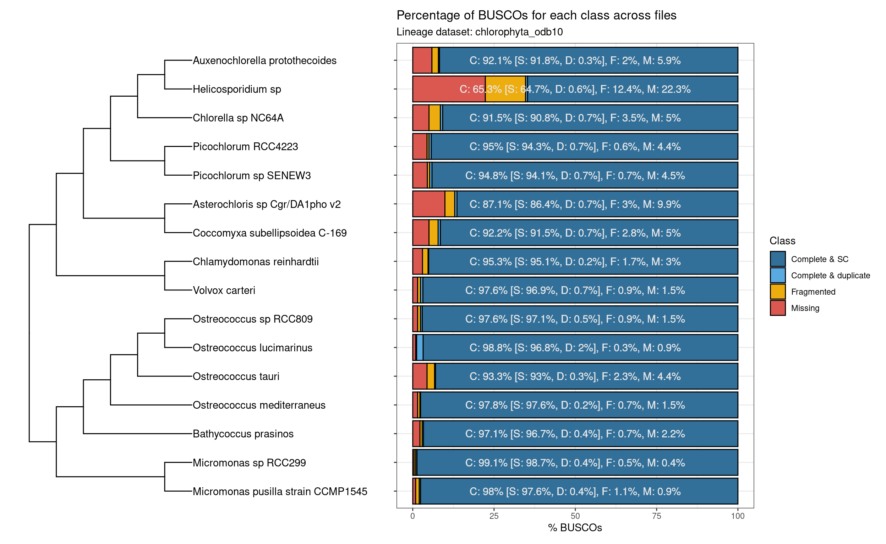

library(here)
library(cogeqc)
library(tidyverse)
library(Herper)
set.seed(123) # for reproducibility
options(timeout = 6000) # to load files from the web1 Assessing the completeness of Chlorophyta genomes
Here, we will use cogeqc to assess the completeness of Chlorophyta genomes available on Pico-PLAZA 3.0 (Van Bel et al. 2018) using Best Universal Single-Copy Orthologs (BUSCOs).
1.1 Managing external dependencies with virtual environments
Here, for convenience, we will install BUSCO in a Conda environment for use with cogeqc. For that, we will use the Bioconductor package Herper.
Below, you can find the code to install miniconda in a directory of your choice (here, “~/Documents”) and create a virtual environment containing a BUSCO installation.
# Path to where BUSCO will be installed and env name
my_miniconda <- file.path("~/Documents", "miniconda")
env <- "cogeqc_env"
# Create env named `cogeqc_env` with BUSCO in it
install_CondaTools(
tools = "busco==5.3.0",
env = env,
channels = c("conda-forge", "bioconda"),
pathToMiniConda = my_miniconda
)1.2 Data acquisition
Now, we will load all genomes directly from PLAZA as DNAStringSet objects and export them to a single directory of FASTA files, so we can run BUSCO in batch mode.
# Links to Chlorophyta genomes from Pico-PLAZA 3.0
base_url <- "ftp://ftp.psb.ugent.be/pub/plaza/plaza_pico_03/Genomes/"
links <- paste0(
base_url,
c("mpu.fasta.gz", "mrcc299.fasta.gz", "olu.fasta.gz", "ome.fasta.gz",
"orcc809.fasta.gz", "ota.fasta.gz", "bprrcc1105.fasta.gz",
"cre.fasta.gz", "vca.fasta.gz", "cvu.fasta.gz", "acg.fasta.gz",
"pse3.fasta.gz", "prcc4223.fasta.gz", "cnc64a.fasta.gz",
"hsp.fasta.gz", "apr.fasta.gz")
)
# Load all genomes
genomes <- lapply(links, Biostrings::readDNAStringSet)
names(genomes) <- basename(links)
# Write all genomes to a subdirectory of tempdir
genomes_path <- file.path(tempdir(), "genomes")
if(!dir.exists(genomes_path)) { fs::dir_create(genomes_path) }
write <- lapply(seq_along(genomes), function(x) {
Biostrings::writeXStringSet(
x = genomes[[x]],
filepath = file.path(genomes_path, names(genomes)[x])
)
return(NULL)
})1.3 Running BUSCO
Now that all genomes are stored as FASTA files in /tmp/Rtmp9EWuNG/genomes, we can assess their completeness with BUSCO.
# See all possible lineage datasets
with_CondaEnv(
env, list_busco_datasets(), my_miniconda
)
# Run BUSCO using chlorophyta_odb10 as the lineage data set
busco <- with_CondaEnv(
env,
run_busco(
sequence = genomes_path,
outlabel = "chlorophyta_busco",
mode = "genome",
lineage = "chlorophyta_odb10",
outpath = tempdir(),
download_path = tempdir()
),
my_miniconda
)
# Read and parse the output
outdir <- file.path(tempdir(), "chlorophyta_busco")
busco_summary <- read_busco(outdir)
save(
busco_summary,
file = here::here("products", "result_files", "busco_summary.rda"),
compress = "xz"
)The parsed BUSCO output (as returned by read_busco()) looks like this:
load(here("products", "result_files", "busco_summary.rda"))
head(busco_summary) Class Frequency Lineage File
1 Complete_SC 94.1 chlorophyta_odb10 pse3.fasta.gz
2 Complete_SC 95.1 chlorophyta_odb10 cre.fasta.gz
3 Complete_SC 96.8 chlorophyta_odb10 olu.fasta.gz
4 Complete_SC 98.7 chlorophyta_odb10 mrcc299.fasta.gz
5 Complete_SC 91.8 chlorophyta_odb10 apr.fasta.gz
6 Complete_SC 86.4 chlorophyta_odb10 acg.fasta.gz1.4 Visualizing summary statistics
Finally, let’s visualize summary BUSCO stats:
# Manually create tree based on Pico-PLAZA's tree
c_branches <- function(b1, b2) {
x <- paste0("(", b1, ",", b2, ")")
}
ostreococcus_root <- "((((Ostreococcus_lucimarinus, Ostreococcus_sp_RCC809), Ostreococcus_tauri), Ostreococcus_mediterraneus), Bathycoccus_prasinos)"
micromonas <- "(Micromonas_pusilla_strain_CCMP1545, Micromonas_sp_RCC299)"
chlamydomonadales <- "(Volvox_carteri, Chlamydomonas_reinhardtii)"
picochlorum <- "(Picochlorum_sp_SENEW3, Picochlorum_RCC4223)"
chlorellales <- "((Helicosporidium_sp, Auxenochlorella_protothecoides), Chlorella_sp_NC64A)"
trebouxiophyceae <- c_branches(
"(Coccomyxa_subellipsoidea_C-169, Asterochloris_sp_Cgr/DA1pho_v2)",
c_branches(picochlorum, chlorellales)
)
chlo_tree <- c_branches(
c_branches(
ostreococcus_root, micromonas
),
c_branches(
chlamydomonadales, trebouxiophyceae
)
)
chlo_tree <- paste0(chlo_tree, ";")
# Read tree as a phylo object and clean species names
chlo_tree <- treeio::read.tree(text = chlo_tree)
chlo_tree$tip.label <- gsub("_", " ", chlo_tree$tip.label)
# Plot species tree and get species order from tree topology
p_tree <- plot_species_tree(chlo_tree, xlim = c(0, 12))
taxa_order <- rev(ggtree::get_taxa_name(p_tree))
# Plot BUSCO summary stats
p_busco <- busco_summary %>%
mutate(File = str_replace_all(File, "\\.fasta.*", "")) %>%
mutate(File = str_replace_all(
File,
c(
"pse3" = "Picochlorum sp SENEW3",
"cre" = "Chlamydomonas reinhardtii",
"olu" = "Ostreococcus lucimarinus",
"mrcc299" = "Micromonas sp RCC299",
"apr" = "Auxenochlorella protothecoides",
"acg" = "Asterochloris sp Cgr/DA1pho v2",
"cvu" = "Coccomyxa subellipsoidea C-169",
"bprrcc1105" = "Bathycoccus prasinos",
"orcc809" = "Ostreococcus sp RCC809",
"prcc4223" = "Picochlorum RCC4223",
"ota" = "Ostreococcus tauri",
"hsp" = "Helicosporidium sp",
"mpu" = "Micromonas pusilla strain CCMP1545",
"vca" = "Volvox carteri",
"ome" = "Ostreococcus mediterraneus",
"cnc64a" = "Chlorella sp NC64A"
)
)) %>%
mutate(File = factor(File, taxa_order)) %>%
plot_busco() +
theme(axis.text.y = element_blank()) +
labs(y = "")
# Combining phylogeny with BUSCO plot
combined <- patchwork::wrap_plots(p_tree, p_busco)
combined
Except for Helicosporidium sp., Chlorophyta genomes on Pico-PLAZA 3.0 have a high quality, as denoted by their high completeness.
Session info
This document was created under the following conditions:
─ Session info ───────────────────────────────────────────────────────────────
setting value
version R version 4.3.0 (2023-04-21)
os Ubuntu 20.04.5 LTS
system x86_64, linux-gnu
ui X11
language (EN)
collate en_US.UTF-8
ctype en_US.UTF-8
tz Europe/Brussels
date 2023-08-01
pandoc 3.1.1 @ /usr/lib/rstudio/resources/app/bin/quarto/bin/tools/ (via rmarkdown)
─ Packages ───────────────────────────────────────────────────────────────────
package * version date (UTC) lib source
ape 5.7-1 2023-03-13 [1] CRAN (R 4.3.0)
aplot 0.1.10 2023-03-08 [1] CRAN (R 4.3.0)
beeswarm 0.4.0 2021-06-01 [1] CRAN (R 4.3.0)
BiocGenerics 0.46.0 2023-04-25 [1] Bioconductor
BiocManager 1.30.20 2023-02-24 [1] CRAN (R 4.3.0)
BiocStyle 2.28.0 2023-04-25 [1] Bioconductor
Biostrings 2.68.0 2023-04-25 [1] Bioconductor
bitops 1.0-7 2021-04-24 [1] CRAN (R 4.3.0)
cli 3.6.1 2023-03-23 [1] CRAN (R 4.3.0)
cogeqc * 1.4.0 2023-04-25 [1] Bioconductor
colorspace 2.1-0 2023-01-23 [1] CRAN (R 4.3.0)
crayon 1.5.2 2022-09-29 [1] CRAN (R 4.3.0)
digest 0.6.31 2022-12-11 [1] CRAN (R 4.3.0)
dplyr * 1.1.2 2023-04-20 [1] CRAN (R 4.3.0)
evaluate 0.20 2023-01-17 [1] CRAN (R 4.3.0)
fansi 1.0.4 2023-01-22 [1] CRAN (R 4.3.0)
farver 2.1.1 2022-07-06 [1] CRAN (R 4.3.0)
fastmap 1.1.1 2023-02-24 [1] CRAN (R 4.3.0)
forcats * 1.0.0 2023-01-29 [1] CRAN (R 4.3.0)
fs 1.6.2 2023-04-25 [1] CRAN (R 4.3.0)
generics 0.1.3 2022-07-05 [1] CRAN (R 4.3.0)
GenomeInfoDb 1.36.0 2023-04-25 [1] Bioconductor
GenomeInfoDbData 1.2.10 2023-04-28 [1] Bioconductor
ggbeeswarm 0.7.2 2023-04-29 [1] CRAN (R 4.3.0)
ggfun 0.0.9 2022-11-21 [1] CRAN (R 4.3.0)
ggplot2 * 3.4.1 2023-02-10 [1] CRAN (R 4.3.0)
ggplotify 0.1.0 2021-09-02 [1] CRAN (R 4.3.0)
ggtree 3.8.0 2023-04-25 [1] Bioconductor
glue 1.6.2 2022-02-24 [1] CRAN (R 4.3.0)
gridGraphics 0.5-1 2020-12-13 [1] CRAN (R 4.3.0)
gtable 0.3.3 2023-03-21 [1] CRAN (R 4.3.0)
here * 1.0.1 2020-12-13 [1] CRAN (R 4.3.0)
Herper * 1.10.1 2023-07-12 [1] Bioconductor
hms 1.1.3 2023-03-21 [1] CRAN (R 4.3.0)
htmltools 0.5.5 2023-03-23 [1] CRAN (R 4.3.0)
htmlwidgets 1.6.2 2023-03-17 [1] CRAN (R 4.3.0)
igraph 1.4.2 2023-04-07 [1] CRAN (R 4.3.0)
IRanges 2.34.0 2023-04-25 [1] Bioconductor
jsonlite 1.8.4 2022-12-06 [1] CRAN (R 4.3.0)
knitr 1.42 2023-01-25 [1] CRAN (R 4.3.0)
labeling 0.4.2 2020-10-20 [1] CRAN (R 4.3.0)
lattice 0.20-45 2021-09-22 [4] CRAN (R 4.2.0)
lazyeval 0.2.2 2019-03-15 [1] CRAN (R 4.3.0)
lifecycle 1.0.3 2022-10-07 [1] CRAN (R 4.3.0)
lubridate * 1.9.2 2023-02-10 [1] CRAN (R 4.3.0)
magrittr 2.0.3 2022-03-30 [1] CRAN (R 4.3.0)
Matrix 1.5-1 2022-09-13 [4] CRAN (R 4.2.1)
munsell 0.5.0 2018-06-12 [1] CRAN (R 4.3.0)
nlme 3.1-162 2023-01-31 [4] CRAN (R 4.2.2)
patchwork 1.1.2 2022-08-19 [1] CRAN (R 4.3.0)
pillar 1.9.0 2023-03-22 [1] CRAN (R 4.3.0)
pkgconfig 2.0.3 2019-09-22 [1] CRAN (R 4.3.0)
plyr 1.8.8 2022-11-11 [1] CRAN (R 4.3.0)
png 0.1-8 2022-11-29 [1] CRAN (R 4.3.0)
purrr * 1.0.1 2023-01-10 [1] CRAN (R 4.3.0)
R6 2.5.1 2021-08-19 [1] CRAN (R 4.3.0)
Rcpp 1.0.10 2023-01-22 [1] CRAN (R 4.3.0)
RCurl 1.98-1.12 2023-03-27 [1] CRAN (R 4.3.0)
readr * 2.1.4 2023-02-10 [1] CRAN (R 4.3.0)
reshape2 1.4.4 2020-04-09 [1] CRAN (R 4.3.0)
reticulate * 1.30 2023-06-09 [1] CRAN (R 4.3.0)
rjson 0.2.21 2022-01-09 [1] CRAN (R 4.3.0)
rlang 1.1.1 2023-04-28 [1] CRAN (R 4.3.0)
rmarkdown 2.21 2023-03-26 [1] CRAN (R 4.3.0)
rprojroot 2.0.3 2022-04-02 [1] CRAN (R 4.3.0)
rstudioapi 0.14 2022-08-22 [1] CRAN (R 4.3.0)
S4Vectors 0.38.0 2023-04-25 [1] Bioconductor
scales 1.2.1 2022-08-20 [1] CRAN (R 4.3.0)
sessioninfo 1.2.2 2021-12-06 [1] CRAN (R 4.3.0)
stringi 1.7.12 2023-01-11 [1] CRAN (R 4.3.0)
stringr * 1.5.0 2022-12-02 [1] CRAN (R 4.3.0)
tibble * 3.2.1 2023-03-20 [1] CRAN (R 4.3.0)
tidyr * 1.3.0 2023-01-24 [1] CRAN (R 4.3.0)
tidyselect 1.2.0 2022-10-10 [1] CRAN (R 4.3.0)
tidytree 0.4.2 2022-12-18 [1] CRAN (R 4.3.0)
tidyverse * 2.0.0 2023-02-22 [1] CRAN (R 4.3.0)
timechange 0.2.0 2023-01-11 [1] CRAN (R 4.3.0)
treeio 1.24.1 2023-05-31 [1] Bioconductor
tzdb 0.3.0 2022-03-28 [1] CRAN (R 4.3.0)
utf8 1.2.3 2023-01-31 [1] CRAN (R 4.3.0)
vctrs 0.6.2 2023-04-19 [1] CRAN (R 4.3.0)
vipor 0.4.5 2017-03-22 [1] CRAN (R 4.3.0)
withr 2.5.0 2022-03-03 [1] CRAN (R 4.3.0)
xfun 0.39 2023-04-20 [1] CRAN (R 4.3.0)
XVector 0.40.0 2023-04-25 [1] Bioconductor
yaml 2.3.7 2023-01-23 [1] CRAN (R 4.3.0)
yulab.utils 0.0.6 2022-12-20 [1] CRAN (R 4.3.0)
zlibbioc 1.46.0 2023-04-25 [1] Bioconductor
[1] /home/faalm/R/x86_64-pc-linux-gnu-library/4.3
[2] /usr/local/lib/R/site-library
[3] /usr/lib/R/site-library
[4] /usr/lib/R/library
──────────────────────────────────────────────────────────────────────────────References
Van Bel, Michiel, Tim Diels, Emmelien Vancaester, Lukasz Kreft, Alexander Botzki, Yves Van de Peer, Frederik Coppens, and Klaas Vandepoele. 2018. “PLAZA 4.0: An Integrative Resource for Functional, Evolutionary and Comparative Plant Genomics.” Nucleic Acids Research 46 (D1): D1190–96.